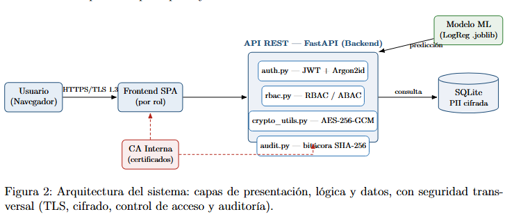
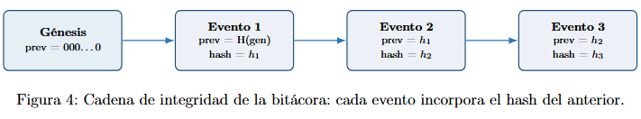
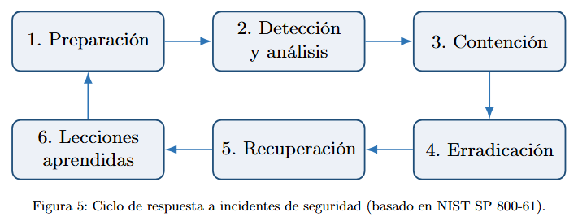

Diseño de un Sistema de Seguridad para Datos Hospitalarios de Pacientes Diabéticos
1Introducción
1.1Contexto Clínico y Justificación del Dataset Base
La diabetes representa una de las condiciones crónicas con mayor impacto en los sistemas de salud a nivel global, caracterizada por altas tasas de internamiento repetitivo y complicaciones multisistémicas. El reingreso hospitalario no planificado constituye un indicador crítico de ineficiencia en el alta médica, falta de adherencia al tratamiento post-alta o seguimiento ambulatorio deficiente.
Para abordar esta problemática, se seleccionó el dataset de dominio público Diabetes 130-US Hospitals (1999–2008). Este conjunto de datos abarca 10 años de atención clínica en 130 hospitales de Estados Unidos e incluye más de 100,000 registros de pacientes internados con diagnóstico de diabetes. Las variables contempladas abarcan información demográfica, historial de admisiones, resultados de laboratorio, número de medicamentos administrados y la variable objetivo: si el paciente reingresó al hospital en un periodo menor a 30 días, mayor a 30 días, o si no registró reingreso.
1.2Caso de Uso de Negocio
El caso de uso de negocio consiste en implementar un Sistema Integrado de Evaluación de Riesgo de Reingreso y Gobierno de Datos Clínicos. El sistema procesa los datos clínicos del paciente al momento del alta para estimar la probabilidad de que este reingrese en un lapso inferior a 30 días.
Al identificar preventivamente a los pacientes en el estrato de "Alto Riesgo", el personal médico y administrativo activa protocolos de intervención temprana (consultas telefónicas a las 48 horas, visitas domiciliarias o ajuste farmacológico inmediato). Esto no solo mejora los resultados en salud del paciente, sino que disminuye la saturación en las salas de urgencias y optimiza la capacidad operativa del hospital.
1.3Integración de Dataset de Enriquecimiento
Para que la solución aporte valor medible y permita simulaciones realistas a nivel administrativo y directivo, el dataset base se complementa con tres fuentes de datos sintéticas y normalizadas:
- Catálogo Maestro ICD-9 de Diagnósticos: traduce los códigos alfanuméricos del dataset base (
diag_1,diag_2,diag_3) a descripciones clínicas legibles. - Entidad Maestra de Personal y Unidades Médicas: agrega atributos como
doctor_id, especialidad médica y pabellón de internamiento. Permite simular un entorno multiusuario donde cada médico visualiza únicamente los pacientes asignados a su servicio. - Matriz de Costos Hospitalarios: asigna valores monetarios a las estancias hospitalarias, procedimientos de laboratorio y medicamentos administrados para proyectar el ahorro financiero acumulado al evitar reingresos no planificados.
1.4Objetivos e Indicadores Clave de Desempeño (KPIs / OKRs de Negocio)
Para evaluar objetivamente la generación de valor del proyecto en el dominio de salud, se establecen los siguientes indicadores clave:
- Tasa de Reingreso a 30 Días: porcentaje de pacientes diabéticos dados de alta que retornan al establecimiento dentro de los primeros 30 días.
- Costo Promedio Evitado por Prevención: impacto económico estimado al evitar estancias hospitalarias innecesarias mediante seguimiento preventivo.
- Ratio de Adherencia al Protocolo Post-Alta: porcentaje de pacientes de alto riesgo que completan un contacto de seguimiento dentro de las primeras 48 horas posteriores al alta.
- Días Promedio de Estancia Hospitalaria (ALOS): duración media del internamiento en función de la complejidad del régimen de medicación administrada.
2Trasfondo Teórico, Gobierno de Datos y Marco Normativo
2.1Marco Legal y Normativo
El tratamiento de datos de salud exige el cumplimiento estricto de marcos legales de privacidad y protección de datos personales. En el ámbito peruano, el proyecto se alinea con las disposiciones de la Ley N.º 29733 (Ley de Protección de Datos Personales) y su Reglamento, garantizando los siguientes principios:
- Principio de Finalidad y Proporcionalidad: los datos se procesan exclusivamente para la evaluación del riesgo clínico y la analítica hospitalaria.
- Principio de Confidencialidad y Seguridad: se implementan medidas técnicas y organizativas para impedir el acceso, modificación o divulgación no autorizada de datos sensibles de salud.
- Alineación con el Estándar Internacional HIPAA: tratamiento de los datos de identificación bajo protocolos de desidentificación, asegurando que la información de salud protegida (PHI) no se exponga sin controles de cifrado.
2.2Clasificación de Datos
La información manejada en la plataforma se categoriza en tres niveles de sensibilidad, resumidos en la Figura 1.
Atributos como patient_nbr y encounter_id. Máxima protección: cifrado simétrico AES-256-GCM.
Resultados de laboratorio, número de medicamentos y diagnósticos ICD-9 sin identificadores directos. Usados por el modelo de Machine Learning.
Reportes estadísticos y KPIs. Accesibles por niveles directivos sin posibilidad de reconstruir identidades.
3Requerimientos del Sistema y Matriz de Control de Acceso
3.1Requerimientos Funcionales
| Código | Componente | Requerimiento funcional |
|---|---|---|
RF-01 | Interfaz de Usuario (Frontend) | Interfaz web ligera y adaptativa según el rol autenticado (Médico, Director Médico, Auditor, Administrador). |
RF-02 | Servicios de Negocio (Backend) | API REST que procesa peticiones, media la lógica de negocio y se comunica de forma segura con la BD y el modelo predictivo. |
RF-03 | Motor Predictivo ML | Servicio que evalúa las variables clínicas del paciente al alta para estimar la probabilidad de reingreso a 30 días. |
RF-04 | Módulo Clínico (Médico) | Consulta del perfil de riesgo individual y traducción automática de códigos ICD-9 a lenguaje clínico comprensible. |
RF-05 | Dashboard de KPIs (Director) | Panel analítico consolidado (Tasa de Reingreso, Costos Evitados, ALOS) de forma agregada y sin PII. |
RF-06 | Módulo de Seguridad (Auditor) | Interfaz de inspección de la bitácora de eventos y verificación de integridad de los registros. |
3.2Requerimientos de Seguridad
| Código | Dominio | Requerimiento técnico |
|---|---|---|
RS-01 | Protección en Tránsito | HTTPS/TLS 1.3 con certificados autofirmados o emitidos por una CA propia. |
RS-02 | Protección en Reposo | Cifrado simétrico de columnas con PII mediante AES-256-GCM. |
RS-03 | Gestión de Credenciales | Almacenamiento de contraseñas con la función memory-hard Argon2id y sal aleatoria única por usuario. |
RS-04 | Control de Acceso (AuthZ) | Modelo RBAC/ABAC con validación en cada consulta mediante tokens JWT y middleware en el backend (Mediación Completa). |
RS-05 | Trazabilidad e Integridad | Bitácora de auditoría inmutable (append-only) encadenada mediante hashes SHA-256 para garantizar el no repudio. |
RS-06 | Contingencia y Resiliencia | Respaldos periódicos cifrados de la base de datos y plan básico de respuesta ante incidentes de fuga de información. |
3.3Modelo de Control de Acceso (RBAC / ABAC)
Se implementa una arquitectura de Control de Acceso Basado en Roles (RBAC), complementada con Atributos (ABAC), para el enforcement de permisos en cada endpoint del backend. El componente ABAC restringe, por ejemplo, que un médico solo acceda a los pacientes asignados a su doctor_id.
| Rol | Alcance | Lectura PII | Logs | Acción permitida |
|---|---|---|---|---|
| Médico Tratante | Pacientes de su especialidad | Sí (memoria) | No | Consultar riesgo y registrar seguimiento clínico. |
| Director Médico | Vistas agregadas y estadísticas globales | No (enmascarado) | No | Visualizar el dashboard de KPIs operativos y de costos. |
| Auditor de Seguridad | Logs de auditoría y registros de acceso | No | Sí (lectura) | Verificar integridad de firmas y analizar alertas. |
| Admin. BD / IT | Tablas en estado crudo | Solo cifrado | No | Gestión de backups, disponibilidad y mantenimiento. |
4Arquitectura e Infraestructura del Sistema
El sistema sigue una arquitectura cliente–servidor de tres capas (presentación, lógica de negocio y datos), con la seguridad como una preocupación transversal a todas ellas. La Figura 2 muestra los componentes principales y sus relaciones.

Pila tecnológica. El backend se implementa en Python con el framework FastAPI; la persistencia usa SQLite (cifrando las columnas PII); el motor predictivo emplea scikit-learn; la criptografía se apoya en las bibliotecas cryptography (AES-GCM), argon2-cffi (Argon2id) y PyJWT (tokens). El canal TLS se habilita con OpenSSL y una CA propia. El frontend es una SPA ligera servida por el propio backend.
5Implementación de Mecanismos de Ciberseguridad
5.1Cifrado de PII en reposo — AES-256-GCM (RS-02)
Los identificadores personales se cifran con AES-256 en modo GCM, que provee confidencialidad e integridad autenticada de forma simultánea. Cada operación genera un nonce aleatorio de 96 bits; el valor almacenado es la codificación Base64 de nonce ∥ ciphertext, donde el tag de autenticación va embebido. Cualquier alteración del dato cifrado se detecta al descifrar.
crypto_utils.py)def encrypt_pii(plaintext: str) -> str:
aesgcm = AESGCM(config.get_aes_key()) # clave de 256 bits
nonce = os.urandom(12) # 96 bits, único por operación
ct = aesgcm.encrypt(nonce, plaintext.encode(), None)
return base64.b64encode(nonce + ct).decode()5.2Gestión de credenciales — Argon2id (RS-03)
Las contraseñas nunca se almacenan en claro: se procesan con Argon2id (ganador del Password Hashing Competition), una función memory-hard resistente a ataques por GPU y ASIC. Se emplean parámetros de time_cost=3, memory_cost=64 MiB y parallelism=4, con una sal aleatoria única embebida en cada hash. Por ello, dos usuarios con la misma contraseña producen hashes distintos.
5.3Autenticación y control de acceso — JWT + RBAC/ABAC (RS-04)
Tras un inicio de sesión válido, el backend emite un JWT firmado (HS256) con expiración de 60 minutos, que transporta el usuario, su rol y su doctor_id. Cada endpoint valida la firma del token y aplica el permiso RBAC correspondiente mediante una dependencia (middleware), materializando el principio de Mediación Completa: ninguna operación se ejecuta sin verificación previa.
5.4Bitácora inmutable encadenada por hash — SHA-256 (RS-05)
Cada evento sensible se registra en una tabla append-only. La integridad se garantiza encadenando cada registro con el anterior mediante SHA-256:
Como cada hash depende del anterior (partiendo de un bloque génesis de 64 ceros), alterar o eliminar cualquier registro rompe la cadena y es detectado por la función de verificación. Esto proporciona no repudio e integridad verificable de la traza de auditoría (Figura 4).

5.5Protección en tránsito — TLS con CA propia (RS-01)
La comunicación se cifra con TLS usando un certificado de servidor firmado por una Autoridad Certificadora propia (HospitalRootCA), generada con OpenSSL. Esto ejercita el esquema completo de criptografía de llave pública (par de claves, CSR y firma por la CA), aislando el tráfico de escuchas en la red.
6Modelado de Amenazas y Casos de Uso para Simulación
Se aplica el marco STRIDE para identificar amenazas sobre los activos críticos (datos de pacientes, credenciales y bitácora). El Cuadro 4 resume las amenazas y los controles implementados que las mitigan.
| Amenaza (STRIDE) | Escenario | Control mitigante |
|---|---|---|
| Spoofing | Suplantación de un médico para acceder a historias clínicas. | Autenticación con Argon2id + JWT firmado (RS-03, RS-04). |
| Tampering | Alteración de registros de auditoría para ocultar un acceso indebido. | Bitácora encadenada por hash SHA-256 (RS-05). |
| Repudiation | Un usuario niega haber consultado un paciente. | Trazabilidad con no repudio en la bitácora (RS-05). |
| Information Disclosure | Robo de la base de datos o escucha de red. | AES-256-GCM en reposo (RS-02) + TLS en tránsito (RS-01). |
| Denial of Service | Saturación del servicio de predicción. | Respaldos y plan de resiliencia (RS-06); rate limiting futuro. |
| Elevation of Privilege | Un director intenta descifrar PII o ver historias. | RBAC/ABAC con mediación completa por endpoint (RS-04). |
Entidades afligidas ante una brecha. Una fuga de información afectaría principalmente a: (i) los pacientes, cuya PHI quedaría expuesta; (ii) el hospital, expuesto a sanciones legales bajo la Ley N.º 29733 y a daño reputacional; y (iii) el personal médico, cuyas acciones podrían ser repudiadas sin una traza íntegra.
Casos de uso para simulación. Se contemplan como pruebas:
- (a) intento de acceso de un rol no autorizado a un endpoint (esperado:
403 Forbidden); - (b) acceso de un médico a un paciente de otro servicio (bloqueo por ABAC);
- (c) manipulación de un registro de la bitácora (detección por
verify_chain); y - (d) descifrado de un ciphertext alterado (fallo del tag GCM).
7Plan de Contingencia, Respuesta a Incidentes y Protección Futura
7.1Respaldos y Recuperación (RS-06)
Se establece una política de respaldos periódicos cifrados de la base de datos, almacenados de forma independiente al servidor de producción. La estrategia sigue el principio 3-2-1 (tres copias, dos medios, una externa) para garantizar la recuperación ante desastres o ataques de ransomware.
7.2Plan de Respuesta a Incidentes
Se adopta el ciclo de respuesta a incidentes basado en NIST (Figura 5): preparación, detección y análisis, contención, erradicación, recuperación y lecciones aprendidas. Ante una sospecha de fuga, se revoca el acceso comprometido, se preserva la bitácora como evidencia forense y se notifica según la normativa vigente.

7.3Recomendaciones de Protección de Datos Futura
Se identifican medidas que, por alcance del proyecto, no se implementan en esta entrega pero se recomiendan a futuro:
- Gestión de claves con HSM/KMS y rotación periódica de la clave AES, en lugar de un archivo local.
- Autenticación multifactor (MFA) para roles con acceso a PII.
- Registro de auditoría externo (WORM) o anclaje periódico del último hash en almacenamiento inmutable.
- Rate limiting y protección ante fuerza bruta en el login.
- Migración a una base de datos con cifrado transparente (TDE) y control de accesos a nivel de fila para producción.
8Retrospectiva, Lecciones Aprendidas y Conclusiones
Lo que funcionó bien. La arquitectura modular del backend y la adopción del principio de "seguridad por diseño" permitieron que cada endpoint naciera protegido desde la definición del control de accesos. El uso exclusivo de bibliotecas criptográficas estándar y consolidadas (cryptography, argon2-cffi) evitó fallas por reinvención de algoritmos. Asimismo, la separación estricta entre los módulos de negocio y los servicios transversales de ciberseguridad (crypto, auth, rbac, audit) facilitó la verificación aislada de cada control técnico.
Dificultades y aprendizajes. La principal complejidad técnica radicó en garantizar la eficiencia del backend sin degradar el rendimiento de la API. Se aprendió la importancia crítica de la gestión de datos, asegurando que llaves criptográficas y certificados jamás se versionen en el repositorio. Asimismo, representó un reto técnico importante la correcta implementación de la bitácora encadenada ante solicitudes concurrentes para evitar rupturas de integridad, así como el diseño del enmascaramiento y desidentificación de datos sensibles para cumplir con el principio de proporcionalidad de la Ley N.º 29733.
Conclusión. El proyecto demuestra la viabilidad de un sistema de información hospitalario seguro donde la ciberseguridad y la gobernanza de datos constituyen una parte importante. A través de la integración de cifrado autenticado (AES-256-GCM), protección en tránsito (TLS 1.3), almacenamiento de credenciales memory-hard (Argon2id), control de acceso adaptativo (RBAC/ABAC) y trazabilidad, el sistema garantiza el cumplimiento de los principios de confidencialidad, integridad y no repudio exigidos por las normativas de salud.
9Anexos y Evidencias Técnicas
9.1Resultados de las pruebas de seguridad
La suite test_security.py valida los controles con 20/20 pruebas exitosas (cifrado AES-GCM y detección de manipulación, Argon2id, RBAC, JWT e integridad de la bitácora). Las pruebas de integración de la API verifican 14/14 escenarios, incluyendo denegaciones por RBAC/ABAC (403) y acceso sin token (401).
9.2Principales endpoints de la API
| Método | Ruta | Descripción (rol) |
|---|---|---|
POST | /api/login | Autenticación y emisión de JWT. |
GET | /api/medico/pacientes | Pacientes asignados (Médico). |
GET | /api/medico/pacientes/{id} | Riesgo + PII descifrada + ICD-9 (Médico). |
GET | /api/director/kpis | Indicadores agregados sin PII (Director). |
GET | /api/auditor/logs | Bitácora de eventos (Auditor). |
GET | /api/auditor/verify | Verificación de integridad (Auditor). |
GET | /api/admin/tablas | Ciphertexts sin descifrar (Admin BD). |
9.3Repositorio y ejecución
El código fuente se encuentra en el repositorio del proyecto. La ejecución con TLS se realiza mediante uvicorn apuntando a los certificados generados por la CA propia. Las credenciales de demostración y los pasos de instalación se documentan en el archivo README.md.
https://github.com/Luciana-y/Proyecto-Etica-Parcial